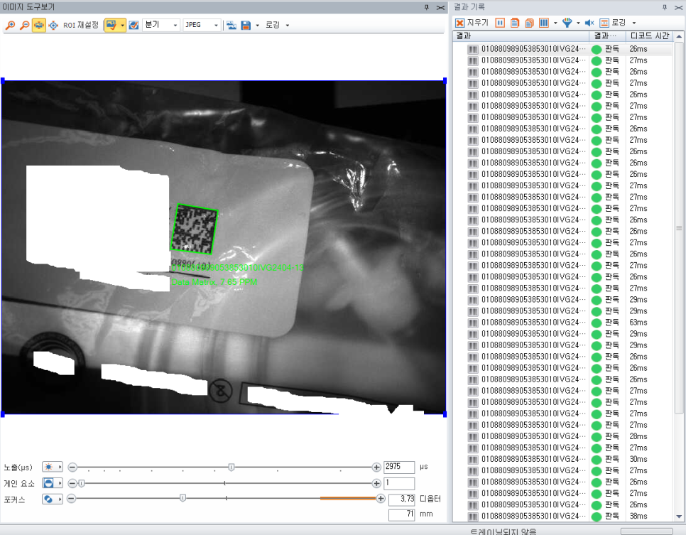

리더기 성능 확인
- 기존 장비 상태 확인
- Decode 동작 점검
바코드 · Data Matrix · 조명
바코드 리더기를 교체하지 않고 플랫돔 조명과 광학 조건 최적화로 난반사를 줄여 판독 안정성과 속도를 개선한 사례
강한 난반사가 발생하는 비닐 포장재에 레이저 마킹된 2D Data Matrix를 안정적으로 판독해야 했던 프로젝트입니다. 기존 Cognex 바코드 리더기의 자체 조명만 사용할 때는 제품마다 반사 상태가 달라 판독 시간이 약 100~200ms까지 증가하거나 판독이 불안정한 경우가 있었습니다. ASPEC은 링 조명, 바 조명 등 여러 광학 조건을 비교한 뒤 플랫돔(Flat Dome) 조명을 적용하여 코드 영역의 밝기를 균일하게 만들고, 대부분의 제품에서 30ms 이하의 판독시간을 확보할 수 있도록 시스템을 최적화했습니다.

Project Summary
01 · Overview
산업용 바코드 판독에서는 리더기의 해상도나 알고리즘만큼 촬영되는 코드의 영상 품질이 중요합니다.
이번 프로젝트의 검사 대상은 비닐 포장재에 레이저로 마킹된 2D Data Matrix 코드였습니다. 사용 중인 산업용 바코드 리더기 자체의 성능에는 문제가 없었지만 비닐 표면에서 발생하는 강한 난반사 때문에 제품마다 코드의 밝기와 대비가 크게 달라졌습니다.
동일한 코드라도 즉시 판독되는 제품, 여러 번 시도한 뒤 판독되는 제품, 일부 영역이 반사광에 묻혀 판독이 어려운 제품이 반복적으로 발생했습니다. 코드 탐색 및 Decode 시간이 길어지는 경우에는 처리시간이 약 100~200ms까지 증가해 일정한 생산라인 택타임을 유지하기 어려웠습니다.
ASPEC은 바코드 리더기를 상위 모델로 교체하기보다 문제의 원인이 영상 취득 조건에 있다고 판단하고 제품의 반사 특성에 맞는 광학 조건부터 다시 검토했습니다.
02 · Problem
이번 검사에서 가장 큰 문제는 비닐 표면의 난반사였습니다. 비닐과 같이 반사가 강한 재질은 조명의 위치와 카메라 각도에 따라 특정 영역에 강한 반사광이 발생할 수 있습니다.
레이저 마킹된 Data Matrix는 인쇄된 검은색 코드와 달리 표면의 미세한 물성 차이로 명암이 형성되기 때문에 조명 조건에 따라 코드 대비가 크게 달라질 수 있습니다. 반사광이 코드 영역에 겹치면 일부 Cell이 밝게 사라지거나 주변 영역과의 명암 차이가 줄어듭니다.
이번 프로젝트에서는 단순히 코드가 보이는지가 아니라 전체 코드 영역의 명암 균일성, 국부 반사광, 제품 위치 변화에 대한 안정성과 Decode 시간을 함께 평가했습니다.
03 · System
Cognex 바코드 리더기의 자체 성능을 먼저 확인한 뒤 실제 취득 영상과 반사 형태를 분석했습니다. 이후 기존 자체 조명, 링 조명, 바 조명과 Flat Dome 조명을 같은 제품에서 비교하여 코드와 배경의 대비, 국부 반사광, 전체 밝기 균일도, 위치 변화에 대한 안정성과 Decode 시간을 함께 검토했습니다.
여러 조건을 시험한 결과 이번 제품에서는 Flat Dome 방식이 가장 안정적인 영상 조건을 만들었습니다. 이는 모든 난반사 대상에 Flat Dome이 정답이라는 의미가 아니라, 이번 비닐 재질과 레이저 마킹 조건에서 가장 적합했던 구성입니다.
04 · Inspection
난반사를 줄이기 위해 하나의 조명을 바로 선정한 것이 아니라 기존 바코드 리더기 자체 조명, 링 조명, 바 조명과 Flat Dome 조명을 실제 제품으로 비교했습니다.
각 조명은 빛이 들어가는 방향과 확산 방식이 달라 비닐 표면에서 발생하는 반사 형태도 달라집니다. 가장 밝은 조명을 고르는 대신 코드와 배경의 대비, 국부 반사광, 전체 밝기 균일도, 제품 위치 변화에 대한 안정성과 Decode 시간을 함께 확인했습니다.
여러 조건을 시험한 결과 이번 제품에서는 Flat Dome 방식이 가장 안정적인 영상 조건을 만들었습니다.
05 · Inspection
Flat Dome 조명은 광원을 넓게 확산시켜 대상 표면에 비교적 균일한 빛을 공급하는 방식입니다. 이번처럼 표면 반사가 강한 비닐에서는 특정 방향의 직접광이 코드 일부에 집중되는 현상을 완화하고 코드 전체를 균일하게 촬영할 수 있는 조건을 만들기 유리했습니다.
적용 이후에는 특정 영역에 집중되던 난반사가 줄고 Data Matrix 코드 대비와 밝기 균일성이 개선되어 Code Locate와 Decode가 보다 안정적으로 이루어졌습니다.
제품 형상, 재질, 카메라 위치와 마킹 방식에 따라 적합한 조명은 달라지며, Flat Dome은 이번 프로젝트의 조건에서 가장 적합했던 방식입니다.
06 · Inspection
이번 코드는 일반적인 잉크 인쇄가 아니라 비닐 표면에 레이저로 마킹된 Data Matrix였습니다. 레이저 마킹은 재질의 변화로 명암을 만들기 때문에 표면 상태와 조명 방향에 따라 사람이 보는 대비와 카메라가 인식하는 대비가 크게 달라질 수 있습니다.
반사가 강한 재질에서는 코드 Cell과 배경의 밝기 차이가 줄거나 일부 Cell이 반사광에 묻힐 수 있습니다. 단순히 밝은 조명을 사용하는 것보다 마킹 특성이 안정적으로 드러나는 빛의 방향과 확산 방식을 찾는 것이 중요합니다.
이번 프로젝트에서는 플랫돔을 통해 레이저 마킹 영역의 영상 균일성을 개선하고 Data Matrix 알고리즘이 필요한 특징을 보다 안정적으로 확보하도록 구성했습니다.
07 · Before / After
※ 실제 프로젝트 이미지와 측정 결과이며 제품 상태와 검사 조건에 따라 판독시간은 달라질 수 있습니다.
08 · Decode Time
기존 자체 조명 조건에서는 제품에 따라 코드가 즉시 검출되지 않아 Decode 과정이 길어지고 판독시간이 약 100~200ms까지 증가했습니다. Flat Dome 조명 적용과 광학 조건 최적화 이후에는 코드 위치와 Cell 구조가 영상에서 더 명확하게 나타나 대부분의 제품을 30ms 이하에서 판독할 수 있었습니다.
생산라인에서는 특정 샘플 하나의 최고 속도보다 제품별 판독시간 편차를 줄이는 것이 중요합니다. 이번 프로젝트는 입력 영상의 품질을 개선해 코드 탐색과 판독을 안정화하고, 생산라인 택타임을 유지할 수 있는 조건을 만드는 데 초점을 맞췄습니다.
※ 실제 프로젝트 측정 결과이며 제품 상태와 검사 조건에 따라 판독시간은 달라질 수 있습니다.
09 · Result
비닐 표면에서 코드 영역을 가리던 강한 반사광을 줄여 보다 균일한 이미지를 확보했습니다.
레이저 마킹 코드와 주변 배경이 영상에서 보다 명확하게 구분되도록 촬영 조건을 구성했습니다.
제품마다 달라지던 영상 상태를 안정화하여 Code Locate와 Decode가 일관되게 이루어지도록 개선했습니다.
약 100~200ms까지 발생하던 판독시간을 광학 최적화 후 대부분 30ms 이하로 단축했습니다.
10 · Engineering
바코드가 잘 읽히지 않을 때 상위 사양의 리더기로 교체하는 방법을 먼저 생각할 수 있지만, 원인이 광학 조건이라면 장비를 바꿔도 같은 문제가 반복될 수 있습니다.
이번 프로젝트에서는 기존 Cognex 바코드 리더기의 Decode 성능보다 난반사 때문에 안정적인 코드 영상을 얻지 못하는 것이 핵심 문제였습니다. 기존 리더기를 유지하면서 조명과 배치 조건을 변경하는 것이 더 직접적인 해결 방법이었습니다.
ASPEC은 실제 제품 샘플을 기준으로 장비, 조명, 대상 표면, 설치 기하와 알고리즘을 하나의 시스템으로 보고 안정적인 판독 환경을 검토합니다.
08 · Related Cases
비닐, 필름, 금속처럼 반사가 강한 제품이나 레이저 마킹·DPM 코드에서는 바코드 리더기의 사양만으로 판독 성능이 결정되지 않습니다. 실제 제품 샘플과 코드 종류, FOV, WD, 생산속도와 목표 판독시간을 알려주시면 리더기뿐 아니라 링·바·돔·플랫돔 등 광학 조건까지 함께 비교하여 안정적인 판독 방법을 검토해드립니다.